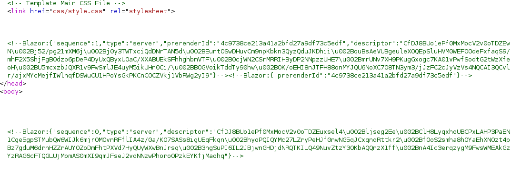

Lantern
Realizo un escaneo de puertos con NMAP
nmap -sVC -p- --open -sS --min-rate 5000 -v -n -Pn -oN lantern_scan 10.10.11.29
Nos redirige a una página
Añadimos el dominio
nano /etc/hosts
Tras un primer vistazo no encuentro nada interesante
Realizo un escaneo de subdominios sin éxito
El servidor usa Blazor. Blazor es .net por lo que puede que tenga un dll.
Hay una solicitud POST en /vacancies por lo que es posible que sea un SSRF, Solo acepta PDF
Encontramos que es vulnerable a SSRF via X-Skipper-Proxy
Esto nos permite leer archivos locales dentro del servidor
Interceptamos la solicitud GET con Burpsuite y la modificamos para poder hacer el SSRF

Buscamos puertos internos con FFUF
ffuf -u http://lantern.htb/ -H "X-Skipper-Proxy: http://localhost:FUZZ" -w /usr/share/seclists/Discovery/Infrastructure/common-http-ports.txt
En nuestro SSRF cambiamos al puerto 5000
Seguiremos usando este puerto interno
Encontramos una script
Metemos este archivo en la URL
Lo cual nos devuelve la script
Si nos fijamos encontraremos que se menciona un archibo .json el cual dice que incluye las crendeciales
Redirijimos la ruta del SSRF

Lo cual nos devuelve un montón de .dll
El dll que nos interesa será este, el cual tiene pinta que tendrá las credenciales
Hacemos la solicitud en el buscador para poder descargar el archivo InternaLantern.dll

Para que nos pille bien la solicitud hay que escribir exactamente el nombre del archivo
Se nos descarga el .dll
Para poder decompilar el archivo usaremos dotPeek, Un decompilador .NET
Encontramos la una password cifrada a Base64
La desciframos y nos da el usuario admin con su respectiva password
admin:AJbFA_Q@925p9ap#22
Estas creds es muy probable que tengamos que meterlas en el login panel del puerto 3000
A primera vista puedo ver que hay una sección para subir contenido
Y que podemos ver los archivos, desde la carpeta Files, app.py
Veo que desde la ruta /PrivacyAndPolicy puedo acceder a archivos locales (LFI)
Realizo la Solicitud GET para el LFI
Encontramos al usuario tomas
Dentro de Upload Content podemos buscar un modulo
Voy a intentar ver si puedo salir del directorio en el que busca
Esto nos da info de que tenemos que subir un archivo .dll
Buscando en Logs.dll encontramos el archivo FileUpload.dll
Este archivo tiene un bug el cual permite subir archivos en /opt/components
Por lo cual tendremos que crear o descargar y modifcar un .dll para obtener el id_rsa del usuario y poder conectarnos
Creamos el .dll
Modificamos el Class1.dll añadiendo la ruta del id_rsa de tomas
str1 = new StreamReader((Stream) new MemoryStream(File.ReadAllBytes("/home/tomas/.ssh/id_rsa")), Encoding.UTF8, true).ReadToEnd();
Subimos el archivo y interceptamos la request con Burpsuite
Esto nos dará el id_rsa
Nos conectamos a través de SSH
Obtenemos la flag del user.txt
Para la escalada de privilegios hago sudo -l para ver que comandos puedo ejecutar como root
Veo que puedo ejecutar un comando
Con ps aux | grep root vemos los servicios ejecutados como root
Encontramos la script automation.sh
Ejecutamos el comando procmon
Dejamos que capture eventos
Y hacemos CTRL+C Para guardar
Es una db de SQLite
Tranferimos esta db a nuestra máquina local
Dentro de este archivo obtenemos la pass de root
Accedemos al user root y obtenemos la flag root.txt